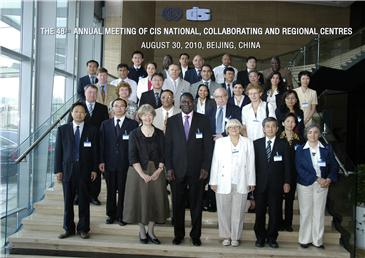
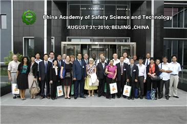

首页
业务范围
工作活动
业务联系
全国消防行业职业技能大赛在江苏南京举行
国务院安委办、应急管理部部署加强城市安全风险防范工作 确定18个城市（区）作为城市安全风险监测预警建设试点
非法违法“小化工”专项整治成效显著
国际劳工组织呼吁建立有复原力的职业安全与健康体系，以应对未来的紧急情况
国际劳工组织希望应对未来的紧急情况
全国消防行业职业技能大赛在江苏南京举行
国务院安委办、应急管理部部署加强城市安全风险防范工作 确定18个城市（区）作为城市安全风险监测预警建设试点
更多>>


第48届ILO-CIS年会
2010年8月30日，由ILO-CIS中国国家中心承办的国际职业安全卫生信息中心（ILO-CIS）第48届年会在北京召开。这是自1959年国际劳工局国际职业安全卫生信息中心成立51年来，首次在中国召开年会。国际劳工组织（ILO）副总干事迪奥普、国际劳工组织中国蒙古局局长霍百安、国际劳工组织北京局项目...
第48届ILO-CIS会议代表参观安科院
1989年，ILO-CIS中国国家中心参与了由国际劳工组织/国际开发署资助的“开发国家职业安全卫生培训计划”项目的信息工作，主要负责收集职业安全卫生机构的信息工作。这些机构包括政府管理机构、工会机构、学（协）会、科研机构、大专院校及信息中心等。收集内容包括机构名称、隶属部门、负责人、通讯地址、电话传...
国内外职业安全卫生信息和国际劳工标准研究项目
2010年8月31日上午，ILO-CIS年会代表一行参观了中国安全生产科学研究院。吴宗之院长介绍了安科院总体概况和发展规划，介绍了ILO-CIS中国国家中心近年来所做的工作。代表们对安科院的功能定位、研究所设置、主要科研活动、科研经费筹措及使用等方面提了许多问题，双方进行了热烈讨论和交流。 ...
工作活动
项目
Projects
宣传活动
Activities
会议
Meetings
出版物
Publications
杂志
Magazines
相关链接
第48届ILO-CIS年会会议纪要
第48届ILO-CIS年会日程安排
第48届ILO-CIS年会代表名单
通讯 newsletters
世界职业安全健康日
职业安全卫生百科全书